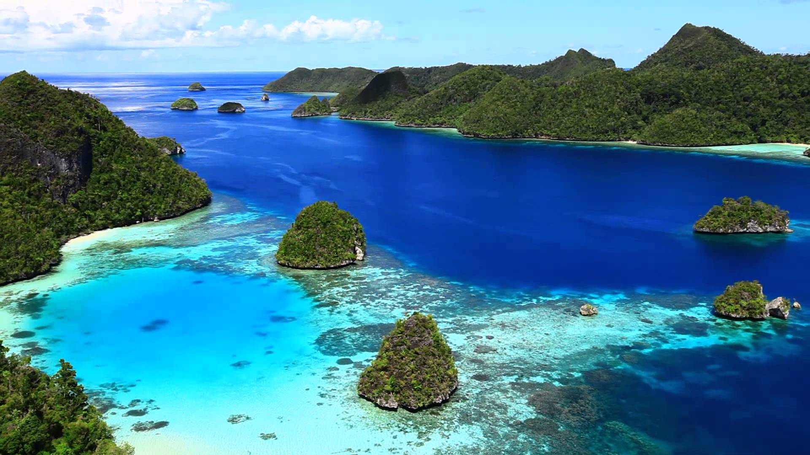
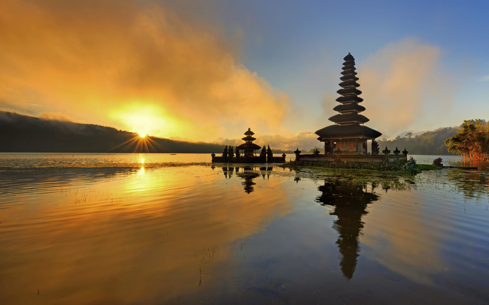
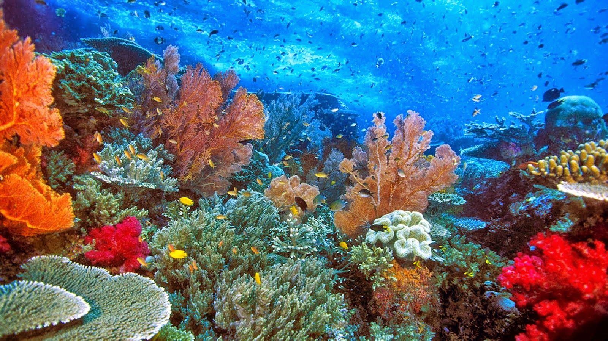
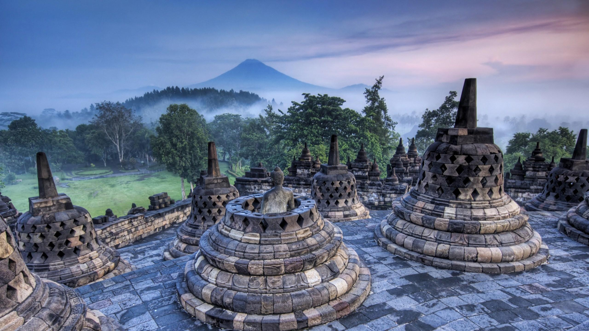

5 Tempat di Indonesia yang memukau Dunia
Disusun oleh Mohammad Tauchid pada 18 Februari 2022
Tak bisa dipungkiri lagi bahwa Indonesia adalah surga dunia. Di sinilah kalian bisa merasakan betapa indahnya dunia hanya dengan mengunjungi satu negara saja. Namun, Indonesia adalah negara yang sangat luas, sehingga butuh banyak waktu untuk mengunjungi setiap tempat wisata di Indonesia. Untuk itu, saya telah merangkum 5 tempat di Indonesia yang memukau dunia.
1. Raja Ampat

Tempat wisata paling indah di Indonesia yang pertama adalah Raja Ampat. Memang tidak bisa di pungkiri lagi jika destinasi wisata bahari yang ada di ujung timur Indonesia ini memiliki pesona yang sangat memukau. Keindahan gugusan pulau-pulau dan ekosistem bawah laut memang bisa di katakana bak surga yang jatuh di Indonesia. Beberapa pulau terfavorit di Raja Ampat yang sangat terkenal yaitu Pulau Batanta, Waigeo, Salawati, dan Misool. Anda tidak boleh melewatkan Raja Ampat dalam list liburan Anda selanjutnya.
2. Bali

Tempat wisata paling indah di Indonesia yang selanjutnya tentu saja adalah Bali. Sepertinya Anda sudah mengenal Bali dengan cukup baik. Siapapun pastinya ingin merasakan berkunjung ke Bali meskipun hanya sekali seumur hidup. Bali memang sudah tidak asing lagi sebagai salah satu tujuan wisata paling favorit bahkan namanya sudah sangat terkenal di tingkat dunia.
3. Pulau Komodo

Pulau Komodo merupakan salah satu pulau di Indonesia yang sudah masuk ke dalam daftar situs warisan dunia oleh UNESCO pada tahun 1986 yang lalu. Di sinilah Anda bisa menemukan spesies paling langka yang hanya ada di pulau ini yaitu komodo. Pulau komodo juga menjadi salah satu Tempat wisata paling indah di Indonesia yang sangat menarik untuk di kunjungi.
4. Bunaken

Jika ingin menikmati keindahan bawah laut Indonesia yang terindah orang-orang pasti akan teringat dengan Bunaken. Bahkan tempat wisata terindah di Indonesia ini juga sudah di masukkan sebagai salah satu situs warisan dunia oleh UNESCO.
5. Borobudur

Tempat wisata paling indah di Indonesia yang berikutnya yaitu Candi Borobudur. Tidak di ragukan lagi jika salah satu situs bersejarah yang termasuk ke dalam 7 keajaiban dunia ini masuk ke dalam daftar tempat wisata yang wajib di kunjungi. Candi Borobudur tak pernah sepi dari kunjungan baik wisatawan lokal maupun para turis asing.